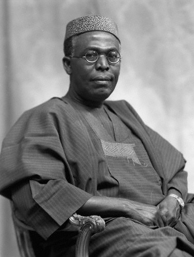

1.Nnamdi Azikiwe 1904-1996
Nnamdi Azikiwe, popularly called Zik was a legend. He was the first premier of Eastern Nigeria and in 1960, he went on to become the first president of Nigeria. Nnamdi Azikiwe was an advocate of Nigerian and African Nationalism as a journalist and a politician. Azikiwe was a prominent journalist who never failed to bring to light African sufferings. He also co-founded the National Council of Nigerians and Cameroons (NCNC), alongside Herbert Macaulay. He played an integral role in the fight for independence. Zik has a university named in his honour in Anambra state. A hero, Nnamdi Azikiwe adorns the five hundred naira note.
2.Funmilayo Ransome Kuti (19

Funmilayo Ransome-Kuti was a teacher, political campaigner, womens rights activist and mother to the great Fela Anikulapo Kuti. She was the first woman in Nigeria to drive a car, and she fought for womens right to vote. Described as the Mother of Africa, Chief Funmilayo Ransome-Kuti is celebrated as one of the foremost leaders of her generation. She played a big role in the fight for independence. In the days of activism by herself and Fela, she withstood military oppression including being thrown down from a story building.
3.Chief Obafemi Awolowo 1909-1987
Chief Obafemi Awolowo began his political career as a nationalist in the Nigerian Youth Movement (NYM). He was an active advocate for independence and played a key role during the first, second republics and civil war. Awolowo was the first Premier of the Western Region and leader of the opposition party. Chief Obafemi Awolowo premiered free education in the western region upon independence. In 1959 the first television station Western Nigerian Television (WNTV), was also founded by this hero. Awolowo was the first individual in the modern era to be named Leader of the Yorubas. In 1949 Awolowo founded the Nigerian Tribune, the oldest surviving private Nigerian newspaper, which he used to spread nationalist consciousness among his fellow Nigerians.
4.Fela Anikulapo-Kuti 1938-1997
Fela Kuti was the legendary afrobeat genre pioneer. Fela was more than a musician, he was an activist and a political maverick, the voice of the oppressed. Fela thrilled nations with his music such as Zombie International Thief Thief (ITT) which spoke the truth and shook tables on which corruption stood on. Due to this, he along with his wives and some children were regularly oppressed, beaten and arrested by the military. Fela is the father or African afro music as his sound has influenced and still influences music today. Fela founded the Kalakuta Republic which served as a recording studio and home to those associated with his band. Since his death, the Afrika Shrine still stands, and his home has become a museum of the great Legend. His is honoured till date annually with the Felabration festival.
5.Kudirat Abiola 1951–1966
Kudirat Abiola was a woman of valour, a feminist and activist. Mainly moved by her husband arrest, Abiola was an advocate for democracy and fought hard for democracy. Remembered through the Kudirat Abiola way at Oregun/ Ojota axis, she was a leader by example.
6.Alhaji Sir Ahmadu Bello 1910- 1966
Sir Ahmadu Bello was born on 12th June, 1910 in Rabbah Sokoto. Considered as one of the most prominent leaders in early Nigeria, he went into politics back in 1934 and in 1954 became the first premier of the Northern Nigeria region. He alongside Abubakar Tafawa Balewa took active roles in the struggle for an independent Nigeria. He is commended for his efforts to modernize and unify the different tribes of northern Nigeria. On 15th January 1966, he was assassinated in a coup that toppled Nigeria’s post-independence government.The Ahmadu Bello University is named after him and his photo adorns Nigeria 200 naira.
7.Chief Anthony Enahoro 1923-2010
Chief Anthony Enahoro was born on 22 July, 1923 and was one of Nigeria foremost anti-colonial and pro-democracy activists. He became Nigeria youngest editor ever at the age of 21 when he became the editor of Dr. Nnamdi Azikiwe newspaper, the Southern Nigerian Defender, Ibadan, in 1944. Chief Enahoro joined the struggle for Nigeria independence in the early 1940s acting as a student leader and leading protests. He was on two occasions jailed by the colonial government for sedition and writing satiric articles. In 1953, he became the first to move the motion for Nigeria independence and is usually referred to as the father of Nigeria State. His motion was however rejected and a successful motion did not come till 1958, the motion was made by Chief Remi Fani-Kayode. He died on December 15, 2010.
8.Margaret Ekpo-died 2006
Margaret Ekpo was born in Creek Town, Calabar and was a Nigerian women’s rights activist who was a pioneering female politician in the country first republic. She played major roles as a grassroot and nationalist politician in the Eastern Nigerian city of Aba. She was a member of the National Council of Nigeria and the Cameroons (NCNC) and was nominated by the NCNc in 1954 to the regional House of Chiefs in 1953. In 1950, she alongside Funmilayo Ransome-Kuti protested killings agt an Enugu coal mine, the victims were leaders protesting colonial colonial practices at the mine. In 1954 she established the Aba Township Womens Association and by 1955, women in Aba had outnumbered men voters in a city wide election. In 2001, Calabar Airport was named after her and she later died in 2006.
9.Herbert Macaulay 1864-1946
Herbert Macaulay was the grandson of Bishop Ajayi Crowther and he was born in 1864, He is considered the founder of Nigerian nationalism as the movement was under his influence in the 1920s. He started the nationalist movement because of the belief that the people of different backgrounds living in the British colony of Nigeria needed to come together as one. He founded the Lagos Daily News to promote the nationalist movement. He was the first Nigerian to establish a political party in 1922, the Nigerian National Democratic Party (NNDP). He became the first national president of the National Council of Nigeria and the Cameroons (NCNC), party he co-founded with Nnamdi Azikiwe in 1944.
10.General Murtala Mohammed 1938
This list cannot be complete without making mention of General Murtala Mohammed. He was one of Nigerias military rulers and he was born on November 8, 1938 in the ancient city of Kano. He took his first political appointment as Commissioner for Communications in 1974 which he combined with his military duties. Although his stay in power was short lived, his administration gave the country a new sense of direction, duty and patriotism. Among his contributions to the development of Nigeria is also his creation of 19 states out of the 12 carved out in 1967. He also set up a Public Complaints Commission which gave probity to the public. He was assassinated at the age of 37 on February 13, 1976. His portrait adorns the 20 Naira note and the Murtala Muhammed International Airport in Lagos is named in his honor.